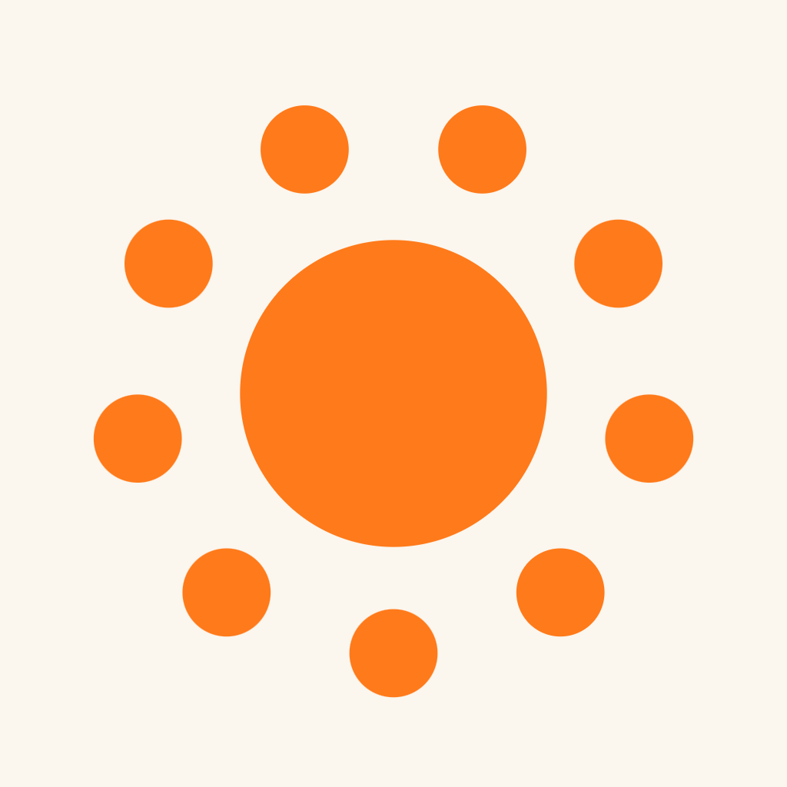
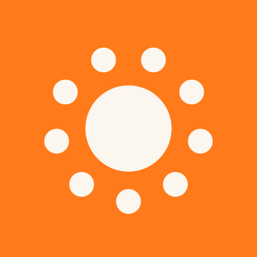

Olimei
גיליון לוגו · 27.10.2026
השם עם השמש: המילה בשחור, והנקודה של ה־i האחרונה היא שמש כתומה של תשע נקודות.
האייקון: אותה שמש בלבן, מוטבעת וזוהרת, על זריחה כתומה. Mip הוא הדמות של האפליקציה ולא הלוגו;
יש לו גיליון משלו.
- שם
- Olimei · 欧丽美 / 歐麗美
- פונט
- Fraunces 700, אופטיקה נעולה על 48
- הסמל
- שמש: עיגול ותשע נקודות, עם רווח למעלה
- הכתום
#ff7a1a- הדיו
#2e2925על לבן או על שמנת#fbf6ee- האייקון
- שמש לבנה, מוטבעת עם זוהר קל, על זריחה · אושר 27.10
- הדמות
- Mip — גיליון דמות

הלוגו עם השם
הגרסה הראשית היא מלל שחור על לבן עם שמש כתומה. על כהה המילה בשמנת והשמש נשארת כתומה. על כתום הכול לבן, כי שמש כתומה על כתום נעלמת.
הראשיעל לבן
על שמנת
#fbf6ee, הרקע של מסך הפתיחה
על כהההמילה בשמנת, השמש כתומה
על כתוםהכול לבן
האייקון
אושר כלוגו ב־27.10. שמש לבנה על זריחה: כתום שמתבהר למעלה (
#ffb35c) ומעמיק למטה (#e8590c), כמו אור שמגיע מהשמש עצמה. השמש מוטבעת עם זוהר קל ותופסת 98% מהריבוע. לגרסת maskable של אנדרואיד היא קטנה ל־85%, כדי להישאר בתוך העיגול שהטלפון חותך.
App Store · 1024
Android · מעוגל מסך הבית · 60ptהגדרות · 40pt
מסך הבית · 60ptהגדרות · 40ptהעומק
השמש באייקון לא שטוחה. שלוש שכבות, מלמטה למעלה, כולן מאותה צורה:
- זוהר
- טשטוש של הצורה ברדיוס 1.7 (מתוך 100), בצבע
#fff3d6באטימות 0.46, מתחת לשמש — אור חם שיוצא אל הכתום - השמש
- מילוי רדיאלי לכל נקודה בנפרד, מואר משמאל למעלה:
#fffaf4במרכז האור,#fff0e0בשוליים - הטבעה
- שוליים בתחתית כל נקודה: הצורה מוזזת 1.6 למטה ומטושטשת ב־1, ומה שנשאר מחוץ לה נצבע
#e8a070באטימות 0.55 - מקור
- הפונקציה
sun()בדף אפשרויות השמש, עםdepth: 'eg', gl: .2, k: .98
השמש — גאומטריה
- ליבה
- עיגול ברדיוס 19.5 (מתוך 100)
- נקודות
- 9, כל אחת ברדיוס 5.6
- מסלול
- מרכזי הנקודות על עיגול ברדיוס 33
- סיבוב
- חצי צעד (20°): רווח בין שתי נקודות למעלה, ונקודה אחת בדיוק למטה
- קוטר כולל
- 77.2 — זו יחידת המרווח (S) שבה מודדים הכול כאן
- למה תשע
- "מזכיר את האזורים": תשע הנקודות הן אזורי האפליקציה סביב יום אחד
צבעים
כתום Olimei
#ff7a1a השמש, והאמצע של הזריחהאור הזריחה
#ffb35c החלק העליון של האייקוןכתום עמוק
#e8590c התחתית של האייקוןדיו
#2e2925 המילהשמנת
#fbf6ee רקע חםלבן
#ffffff הרקע הראשי, והשמש באייקוןטיפוגרפיה
Fraunces 700, עם
font-optical-sizing: none ו־"opsz" 48. בלי הנעילה הזאת, בגדלים גדולים Fraunces עובר לחיתוך דקיק ומנוגד, שאינו זה שנבחר. ה־i האחרונה בלי נקודה; השמש היא הנקודה.Olimeı
Aa Bb Cc Dd Ee Ff Gg
0123456789 · Better every day
0123456789 · Better every day
מרווח וגודל מינימלי
סביב הלוגו נשאר שטח ריק ברוחב חצי S (חצי קוטר השמש) מכל צד. הלוגו עם השם לא קטן מ־96 פיקסל רוחב — מתחת לזה השמש נהיית כתם, ומשתמשים באייקון. האייקון נשאר קריא עד 16 פיקסל.
שטח ריקשום דבר לא נכנס למסגרת המקווקוות
הכי קטןהלוגו 96px, האייקון 16px
לא לעשות
✕
למתוחהיחס נשמר תמיד
✕
שמש כתומה על כתוםעל כתום הכול לבן
✕
לצבוע את השמשהיא כתומה, או לבנה על כתום
✕
על רקע עמוסרק לבן, שמנת, כהה או כתום
קבצים
wordmark-olimei.png הלוגו עם השם, דיו ושמש כתומה, שקוף
wordmark-olimei-light.png אותו, לרקע כהה

app-store-1024.png App Store, בלי שקיפות

google-play-512.png Google Play

pwa-maskable-512.png Android, maskable

android-foreground-432.png Android, השכבה הקדמית


sun.svg השמש לבדה, וקטור